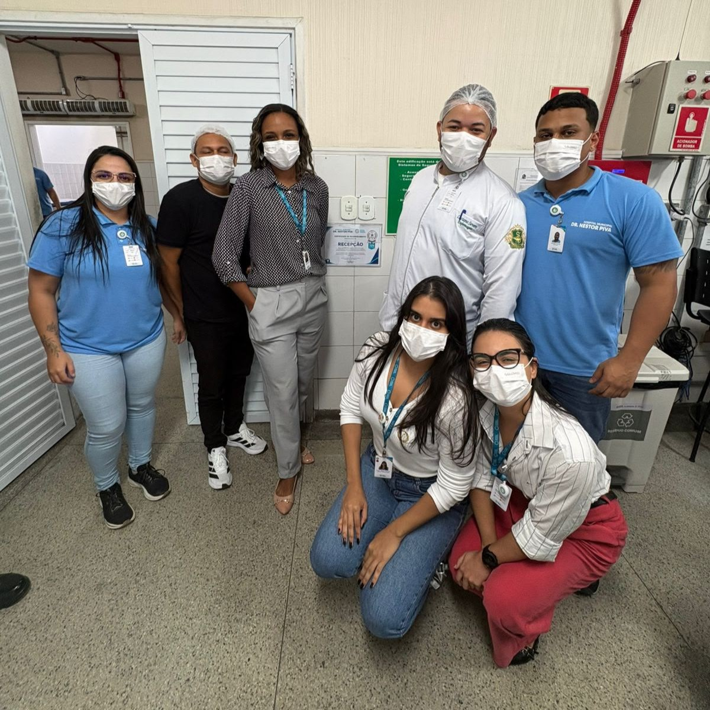
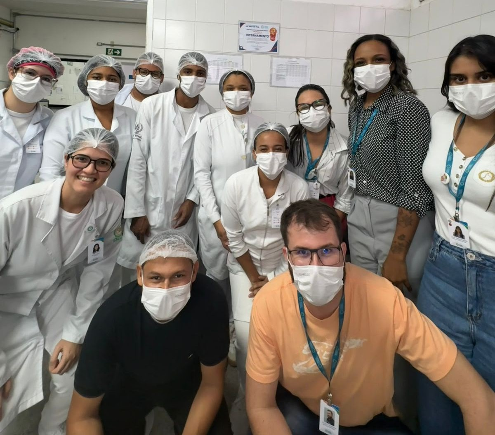
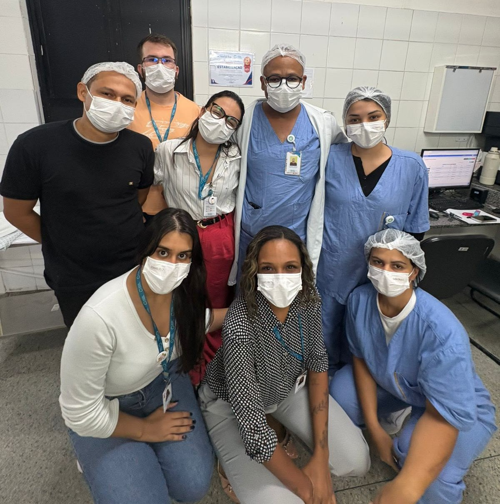
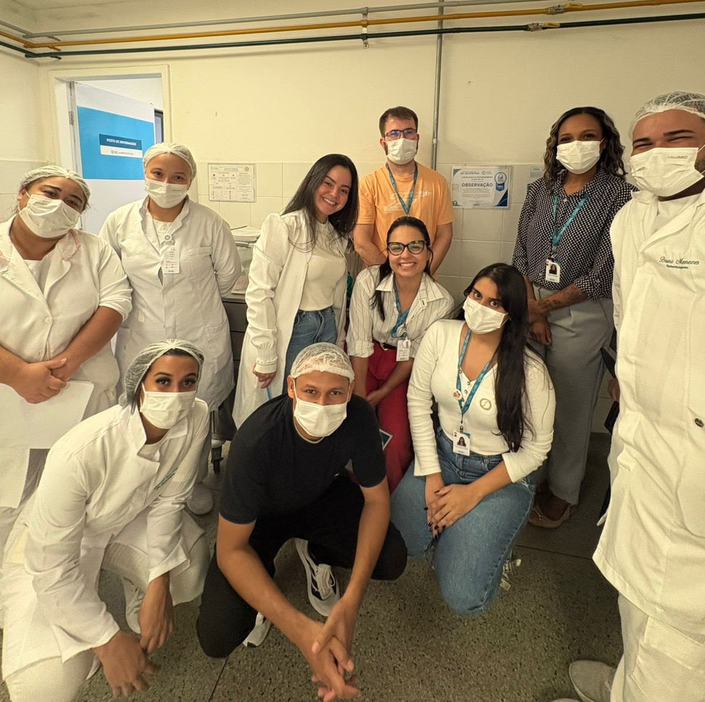
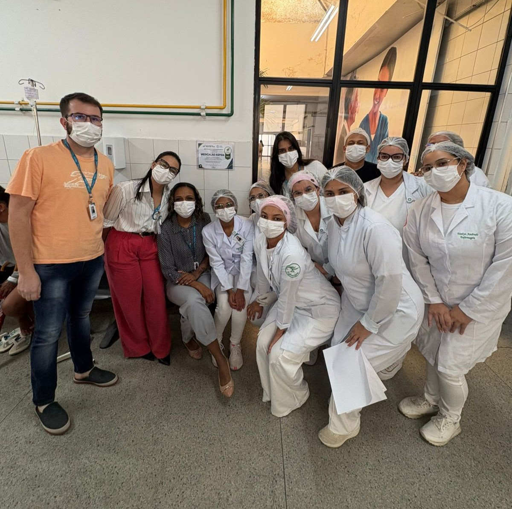
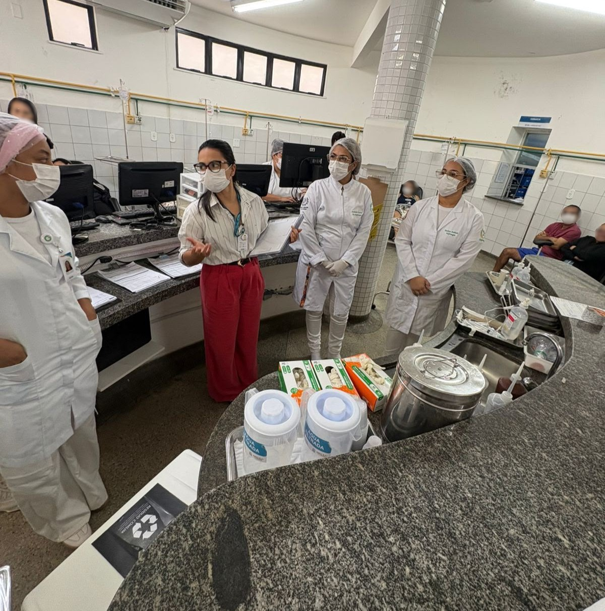
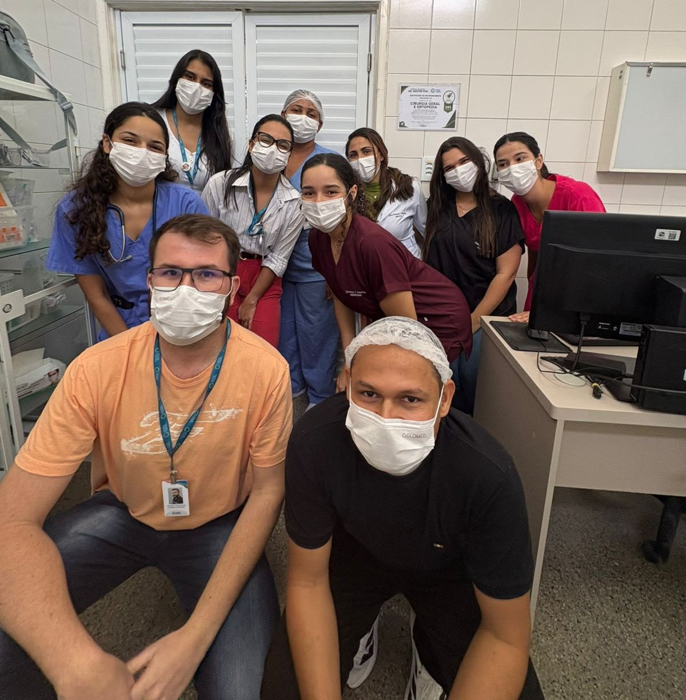
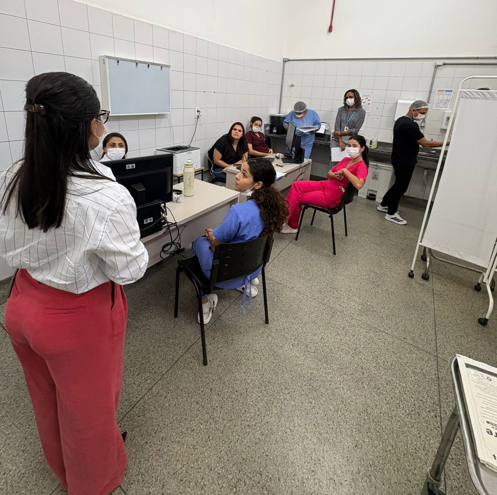
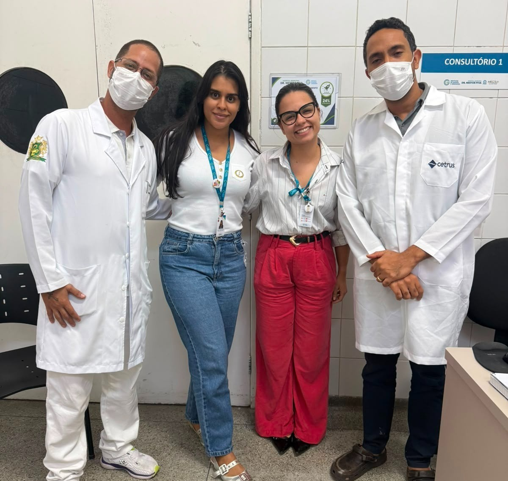

Resultado da 1ª Auditoria
Certificados da 1ª Auditoria
Recepção
72% de conformidade
Internamento
64% de conformidade
Estabilização
60% de conformidade
Observação
48% de conformidade
Medicação Rápida
44% de conformidade
Cirurgia e Ortopedia
24% de conformidade
2ª Auditoria do Programa 5S
Data
06 de Julho de 2026
Horário
14h30
Auditoras
Vitória Suyane e Lais Moraes
Escopo
Setores Assistenciais
Resultado da 2ª Auditoria
Certificados da 2ª Auditoria
Recepção
84% de conformidade
Internamento
84% de conformidade
Medicação Rápida
84% de conformidade
Cirurgia Geral
80% de conformidade
Observação
76% de conformidade
Estabilização
72% de conformidade
Ortopedia
44% de conformidade
Evolução entre Auditorias
Comparativo entre a 1ª e a 2ª Auditoria do Projeto 5S, evidenciando a evolução dos setores após a implementação das ações de melhoria.
Setores Evoluíram
100%Todos os setores apresentaram crescimento entre a primeira e a segunda auditoria.
Certificação Ouro
4Quatro setores alcançaram a certificação Ouro 5S na segunda auditoria.
Maior Evolução
+40Medicação Rápida foi o setor que apresentou o maior crescimento entre as auditorias.
Recepção
Internamento
Medicação Rápida 🏆
Cirurgia Geral
Observação
Estabilização
Ortopedia
Melhoria Contínua
Os resultados demonstram que a aplicação dos planos de ação, o comprometimento das equipes e a metodologia 5S proporcionaram avanços significativos entre as auditorias, reforçando a cultura de organização, qualidade e segurança institucional.
O que é o Dia D do 5S?
O Dia D do Programa 5S é uma ação coletiva de mobilização realizada pelos setores do Hospital Municipal Dr. Nestor Piva, com o objetivo de promover a organização, eliminação de itens desnecessários e melhoria dos ambientes de trabalho.
Durante a ação, cada setor realiza a identificação e separação de materiais, equipamentos e documentos que não possuem mais utilidade operacional, encaminhando-os para uma área de triagem destinada à realocação, descarte ou reaproveitamento.
Mais do que uma atividade pontual, o Dia D fortalece a cultura da qualidade, da segurança e da melhoria contínua dentro da instituição.
Separação
Identificação dos itens sem utilização.
Coleta
Encaminhamento para o ponto de triagem.
Destinação
Realocação, reaproveitamento ou descarte.
Reconhecimento
Valorização dos setores participantes.
Galeria do Programa 5S








